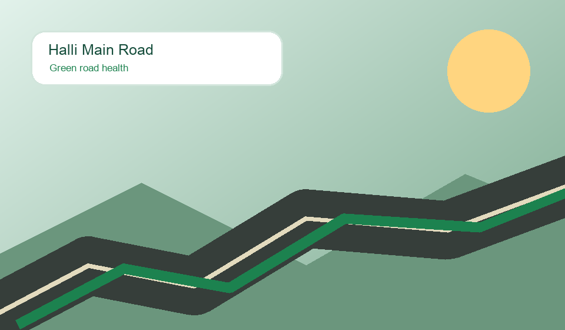

Taluka control room
One dashboard for roads, reports, contractors and public accountability.
Designed from the PRD: road directory, timestamped damage report, contractor info, simulated map, success map, AI hints and officer analytics.
Explore App Pages
12 sectionsHealth Distribution
Live scoreCritical Roads
Search and browse
Road Directory
Digital life-book
Road Detail

Citizen auditor mode
Submit Damage Report
Live India GIS view
Road Health Map
OpenStreetMap India
Zoom, drag and inspect rural road health.
Markers show PMGSY roads near Raichur with green, amber and red health routes. Tiles load live when internet is available.
Reverse chronological log
Damage Timeline
Transparency layer
Contractor Directory
Officer dashboard
Taluka Analytics
Maintenance Budget Planner
SimulatedSuccess map
Best Maintained Roads
Community participation
Citizen Auditor Hub
Offline GenAI simulation